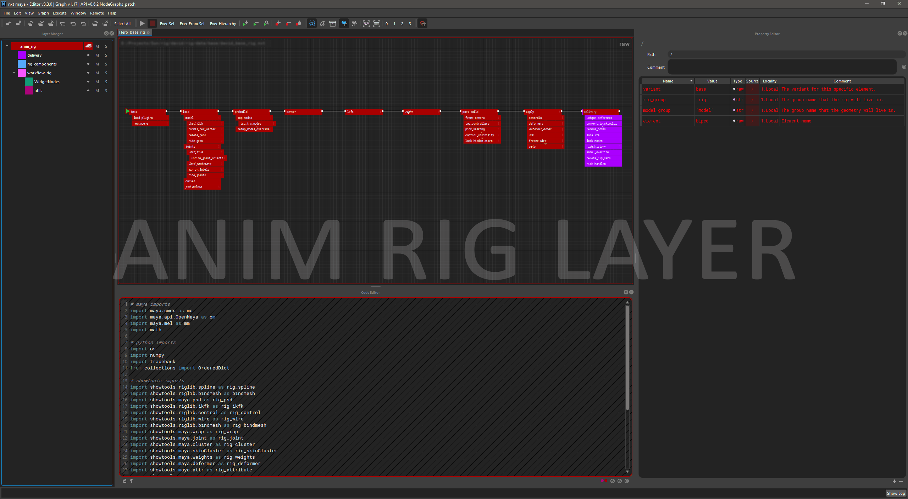

What is nxt?
NXT, pronounced ɛn·ɛks·ti, is a layered code compositing application. Enabling visualization of complex scripts and easy cross discipline collaboration. It’s code with layers with a nice way to see and change data.
New in nxt_editor 4.5
An AI Assistant that looks over, changes and runs the graph with Claude, OpenAI, Grok or a local model. New in 4.4: a code editor with find and replace and completion, a reference editor, Reload Source, a mini map, and plugins for Maya, Unreal and Blender. See What's New.
Introduction
The primary function of nxt is to visualize and automate programming tasks related to computer graphics and linear processing. The intent is to bridge the gap between one-off scripting and general purpose tools through the use of inheritance, layering, and string tokens.
Why use nxt?
The core functionality of nxt was built with insights from industry veterans of various technical and artistic backgrounds. We set out to bring to the table a simple set of principles:
- Visualize a map of what a complex script is actually doing. Nodes, inheritance, and connection lines are easy to understand. However, we've gone a step further and added string tokens. An instant visualization of what an attribute value actually is. Our tokens can be used almost anywhere inside nxt and are dynamically "resolved" during execution. Allowing the user to see exactly what data is flowing around without the use of an external debugger.
- Encourage collaboration though layering and multi context graphs. With our layering system it is easy for departments to share base workflows and utility nodes. Since layering is non-destructive graphs can referenced built on without worrying about breaking someone else's graph. With multi context graphs a Maya user, for example, can directly call a Houdini graph from inside Maya. Alternatively, graphs can call other graphs in the same context, allowing interdependent graphs to be developed simultaneously.
- Make code accessible to everyone. Artists can modify attributes like their used to and learn to make simple code changes that normally would require a TD to intervene. We're not visual programming, but rather a friendly visual portal into code.
What does nxt do?
In the simplest of terms nxt combines multiple layers of nodes into a single composite layer that is then executable. Something like Photoshop layers for your code, you're able to mute, solo, override, and extend layers of code. The resulting composite of the code clearly visualizes where attributes and their values came from. Colors, node paths, and conveniently placed buttons/links allow users to quickly jump to and correct erroneous values.
Example character rig with a general to specific layer structure

Limitations
- We currently do not support asynchronous execution in a single graph. Our current focus is on lineal scripts.
- We are not visual programming, no for loop nodes sorry.
How do I get it?
- pip
pip install nxt-editor
- zip, for Maya, Unreal and Blender
- Download the latest
nxt_<host>.zipfrom our GitHub releases page. - Follow the instructions in the
README.mdinside that zip, or see installation.
- Download the latest
Where do I ask questions or report a bug?
Head over to our GitHub Discussions to ask questions, get help, or report a bug.
If you're confident you found a bug and are familiar with GitHub you can report a core bug here or an editor bug here.
To contribute, see the contributing documentation for nxt or nxt editor.
| Concepts | Tutorials | Installation |
| See concepts for a quick overview of nxt's core concepts. | See the tutorials for a step by step walkthroughs | nxt runs on Python 3.7 to 3.14, the editor on 3.9 to 3.14. See installation for standalone, Maya, Unreal and Blender. |